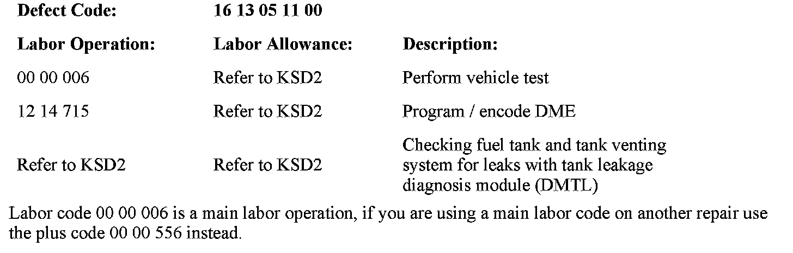

Engine Controls - MIL ON/DTC's 2A15/2A16 Set
SI B12 05 11Engine Electrical Systems
March 2011
Technical Service
This Service Information bulletin replaces SI B12 01 09 dated October 2010.
SUBJECT
E83 X3 Service Engine Soon Lamp or Check Gas Cap is Illuminated: FC 2A15 or 2A16 DMTL Leakage Is Stored in the DME
MODEL
E83 (X3) with N52K engine produced from July 1st, 2006 up to September 30th, 2008
SITUATION
The Service Engine Soon lamp or Check Gas Cap lamps are illuminated while driving. The following faults are stored in the DME memory:
FC 2A15 - DMTL minor leak, leak greater than 1.0 mm
FC 2A16 - DMTL micro leak, leak greater than 0.5 mm
CAUSE
Software error in the DME for the tank leak diagnostic system
PROCEDURE
The latest MY07/MY08 X3 DME software calibration can be identified as listed below:
^ Part number, programmed control module - 7593826 or higher
^ Program version - 0049RK0MG70S
^ Calibration ID 1 - 7587166
^ Calibration ID 2 - 7593827
1. Reprogram the DME if the program number is not equal to or greater than the level identified above.
2. Regardless of whether the vehicle has been recently programmed, perform the DMTL Test Plan to ensure that no leaks are present in the evaporation system. If no leaks are found, the vehicle may be returned to the customer. If a leak is detected, work through the test plan to determine its location. Refer to SI B16 01 07 for troubleshooting procedures, using the VACUTEC(R) Smoke Machine 625-522B-BMW.
Note:
Do not replace the gas cap unless a leak is clearly found using the VACUTEC(R) Smoke Machine 625-522B-BMW.

WARRANTY INFORMATION
Covered under the terms of the BMW New Vehicle/SAV Limited Warranty, any applicable Federal, State (e.g. SULEV or PZEV) or BMW Emissions Warranty or the Certified Pre-Owned Limited Warranty (only applies to CPO vehicles that are still within the CPO coverage period but beyond and Emissions Warranty.